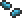
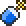

Hallowed Seeds
| Hallowed Seeds | |
|---|---|
|  | |
| Statistics | |
| Type | Seed Crafting material |
| Max stack | 99 |
| Rarity | Orange |
| Use time | 14 |
| Sell | 4 |
Hallowed Seeds are a special type of seed rarely dropped by a Demon Altar when it is destroyed using the Pwnhammer. Planting them will allow you to create the Hallow biome, the only thing that can counteract the Corruption's increased spreading during Hardmode.
They may also be purchased from the Dryad after having defeated the Wall of Flesh.
Crafting
Used in
| Result | Ingredients | Crafting Station | |
|---|---|---|---|
|  | Holy Water(5) | Pixie Dust(5) | By Hand |
| Bottled Water(1) | |||
| Hallowed Seeds(1) | |||
History
- 1.1: Introduced.
| Seeds |
|---|
| Acorn Corrupt Seeds Grass Seeds Jungle Grass Seeds Mushroom Grass Seeds Hallowed Seeds Blinkroot Seeds Moonglow Seeds Daybloom Seeds Deathweed Seeds Waterleaf Seeds Fireblossom Seeds |